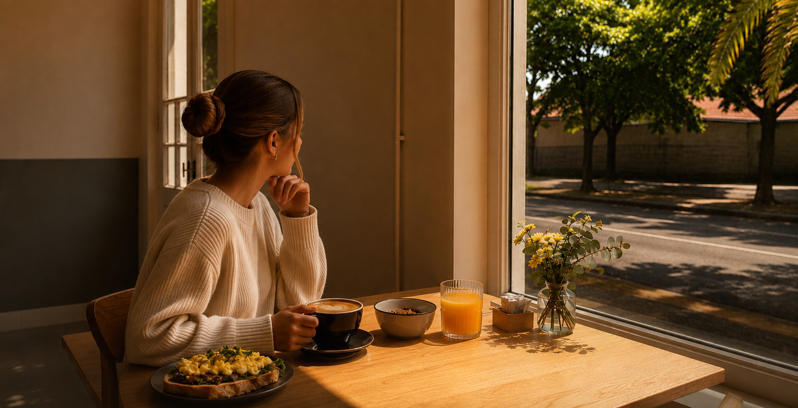

Café de especialidad
junto al río
Un rincón para bajar el ritmo y disfrutar de un buen café en el corazón de Tigre.
Workspace
Wifi rápido y buena luz para tu día de trabajo remoto.
Pet friendly
Traé a tu mascota, acá también es bienvenida.
Coffee to go
Llevate tu café favorito para pasear por Tigre.
Qué encontrás en Delos Coffee
Más que un café: un espacio pensado para quedarse.
-
Café de especialidad
Granos de origen único, tostado artesanal y baristas que preparan cada taza con técnica y cuidado.
-
Pastelería del día
Dulces y salados horneados a diario: siempre hay algo nuevo para descubrir en la vitrina.
-
En frente al río
Mesas con luz natural y vista al río para disfrutar de un buen café y algo rico.
-
Opciones para todos
Menú vegano y sin TACC, y todos los tipos de leche sin costo extra: entera, descremada, deslactosada o de almendras.
Lo que dicen de nosotros
Somos la cafetería mejor valorada de Tigre en Tripadvisor: 5 de 5 burbujas y el puesto N.º 1 entre los lugares de café y té de la zona.
“Una experiencia para repetir una y otra vez!”
«Excelente para desayunar o almorzar. Las opciones para elegir era una mejor que la otra. Muy conveniente para llegar a tren en Tigre y dar un paseo caminando. Súper recomendable.»
“Muy grato lugar para un excelente café.”
«Muy grato lugar para tomar un buen café y comer un pastel, medialunas o algo dulce. Recién inaugurado y atendido por su propio dueño. Nos atendieron de maravilla y el café estaba 10 puntos. Si van a pasear a Tigre, se los recomiendo.»